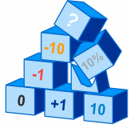
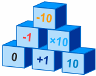

Help! I Can't Do Mathematics!
OK, you are not alone, some people have a tough time with mathematics,
but it is not because you are stupid!
Mathematics is built up step-by-step,

If you miss a step, the whole thing can get confusing
But which steps are you missing? It may be something to do with negative numbers, or fractions, or anything really.

Sometimes the simplest solution is to go back to the basics
Try doing math quizzes from earlier years, and build up your confidence and skill.
And here are other things you can do:
Get Someone to Help You
Sit down with a tutor, teacher or other trusted person and together, with patience, let them watch you solve questions (from Worksheets or the Question Database)
It may take a while to find what you are missing, but then you can focus on those areas (read and practice) until you get success. Then you are on your way again.
Yes, you will need to go back a few steps, but it is worth it.
Because when you do go forward again, it is with confidence!
If you have been struggling for a while there may be lots of new learning, but you will get there.
Learn Your Basic Facts
Another main cause of difficulty is not remembering basic facts (like 5+6=11 or 6x7=42).
This makes you spend your time counting or working out simple things rather than concentrating on learning the new stuff.
The basic facts are like your legs, they should be automatic. You don't want to think how to move each leg each time, that makes daily activities difficult.
Suggestion: use the Math Trainer daily (3 lots of 5-minutes) until you can simply remember that 6x7 is 42, etc.
Learning the tables not only makes mathematics easier, it makes life easier!
Practice
But above all the main thing you need is practice.
- Good tennis players train a lot and play plenty of matches, sometimes many hours a week.
- Good artists spend a lot of time drawing and painting.
- Musicians spend hours every day playing.
So don't expect to be good at mathematics unless you put in many many hours reading, sketching ideas, doing practice question and more.
Suggestion: Do all the math skills here:
Mathopolis Math Skills Practice
Don't be shy to start at a level years earlier (no one is watching you) and work your way up. Do 2 or 3 skills a day ... it will help fill any gaps in your knowledge and give you confidence moving forward.
Read, Play Games, Do Activities, Answer Questions
Try doing many mathematical things! Do activities, puzzles, worksheets and games.
Mathematics gives Certainty
One of the most wonderful things about mathematics is that it gives you certainty in life. You can rely on mathematics.